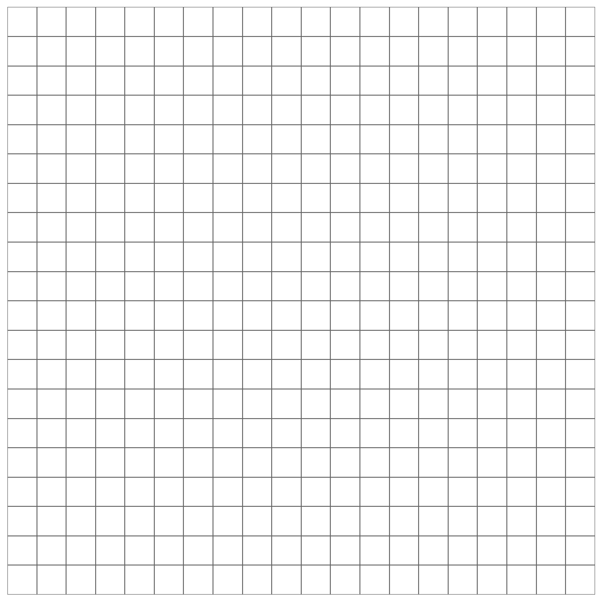

9.A Extra Practice
Sketch each function. Identify asymptotes and describe transformations when appropriate.
Level 1 — Basic Transformations
1. $$ f(x)=\frac{1}{x+2} $$

2. $$ f(x)=\frac{1}{x}-5 $$
3. $$ f(x)=\frac{1}{x-4} $$
4. $$ f(x)=\frac{1}{x}+3 $$
5. $$ f(x)=\frac{1}{x-1} $$
Level 2 — Reflections & Scaling
6. $$ f(x)=-\frac{1}{x+1} $$
7. $$ f(x)=\frac{3}{x} $$
8. $$ f(x)=\frac{1}{2x} $$
9. $$ f(x)=-\frac{2}{x-3} $$
10. $$ f(x)=\frac{4}{x}+1 $$
Level 3 — Multiple Transformations
11. $$ f(x)=\frac{2}{x+3}+4 $$
12. $$ f(x)=-\frac{3}{x-2}-2 $$
13. $$ f(x)=\frac{5}{x-1}+1 $$
14. $$ f(x)=\frac{1}{x+4}-3 $$
15. $$ f(x)=-\frac{2}{x}+2 $$
Level 4 — Algebra + Structure
16. $$ f(x)=\frac{1}{x}+ \frac{1}{x} $$ Simplify and graph

17. $$ f(x)=\frac{2}{x}-\frac{1}{x} $$ Simplify and graph
18. $$ f(x)=\frac{1}{x-2}+ \frac{1}{x-2} $$
19. Describe all transformations: $$ f(x)=-\frac{1}{x-3}+4 $$
20. Describe all transformations: $$ f(x)=\frac{5}{x+2}-3 $$
Level 5 — Conceptual & Analysis
21. Identify asymptotes: $$ f(x)=\frac{7}{x-4}+6 $$
22. Identify asymptotes: $$ f(x)=-\frac{2}{x+1}-5 $$
23. Compare: $$ \frac{1}{x} \text{ and } \frac{1}{x-2} $$
24. Compare: $$ \frac{1}{x} \text{ and } -\frac{1}{x} $$
25. Explain why rational graphs never cross asymptotes.
Answer Key (Detailed)
Level 1:
1. VA: -2, HA: 0
2. VA: 0, HA: -5
3. VA: 4, HA: 0
4. VA: 0, HA: 3
5. VA: 1, HA: 0
Level 2:
6. VA: -1, HA: 0, reflection
7. VA: 0, HA: 0, stretch 3
8. VA: 0, HA: 0, compression
9. VA: 3, HA: 0, reflection + stretch
10. VA: 0, HA: 1
Level 3:
11. VA: -3, HA: 4
12. VA: 2, HA: -2
13. VA: 1, HA: 1
14. VA: -4, HA: -3
15. VA: 0, HA: 2
Level 4:
16. 2/x
17. 1/x
18. 2/(x-2)
19. Right 3, up 4, reflection
20. Left 2, down 3, stretch 5
Level 5:
21. VA: 4, HA: 6
22. VA: -1, HA: -5
23. Right shift 2
24. Reflection across x-axis
25. Function never equals asymptote value